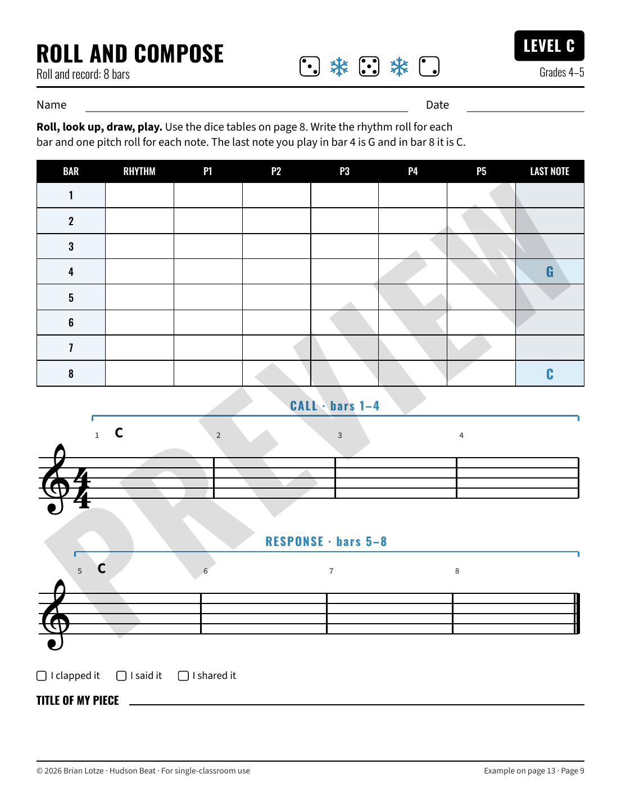
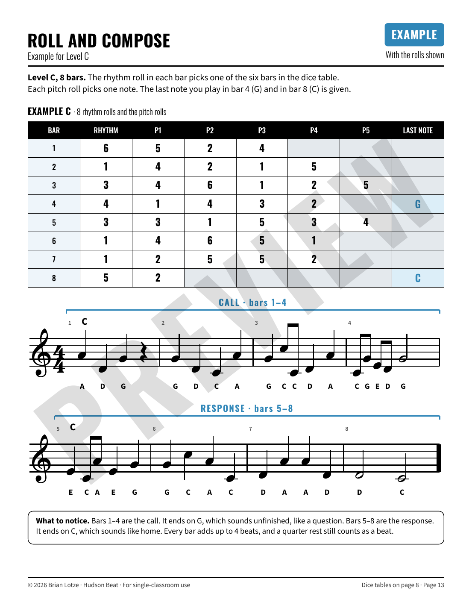

x
x
x
Hudson Beat
Completed examples included
See exactly how the rolls turn into notation

Roll and record sheet
Write each roll, then draw the notes.

Completed example
The rolls are shown beside the notation.
One example for every level